Active Directory
Este documento fue creado por el canal de YouTube MarkH4ck
YouTube: https://www.youtube.com/@MarkH4ck
Web: Marc H4ck
Antes de nada debemos entender qué es un Active Directory. Un AD básicamente es un servicio de directorio desarrollado por Microsoft para gestionar redes de computadoras en entornos Windows.
¿Qué quiere decir eso?
Podemos pensar en un AD como si fuese un directorio telefónico donde no solo guarda nombres y números (usuarios y dispositivos), sino que también verifica que seas quien dices ser (autenticación) y controla qué archivos o carpetas puedes abrir (autorización).
Cuando inicias sesión en una PC de tu oficina (puedes estar en la misma red LAN o usando una VPN) no te estás validando solo en esa máquina, sino ante el Active Directory, que te da la credencial para acceder a tu correo, impresoras y carpetas compartidas…
Componentes Esenciales
El componente esencial para el AD es un servidor dedicado como Microsoft Server configurado con:
- Rol de Active Directory Domain Services.
- El servidor debe ser capaz de resolver nombres internos (ej. dc01.empresa.local). Por ello necesitamos DNS.
- Base de Datos NTDS, donde se guardarán físicamente todos los objetos de la red.
- Un Controlador de Dominio nunca puede tener una IP dinámica (DHCP).
Por otro lado necesitamos el cliente, que se conectará al servidor. Debe ser la versión enterprise o pro.
Se le debe configurar de manera específica la configuración de red del cliente. La "Puerta de enlace" es tu router, pero el Servidor DNS Primario debe ser la dirección IP del Windows Server.
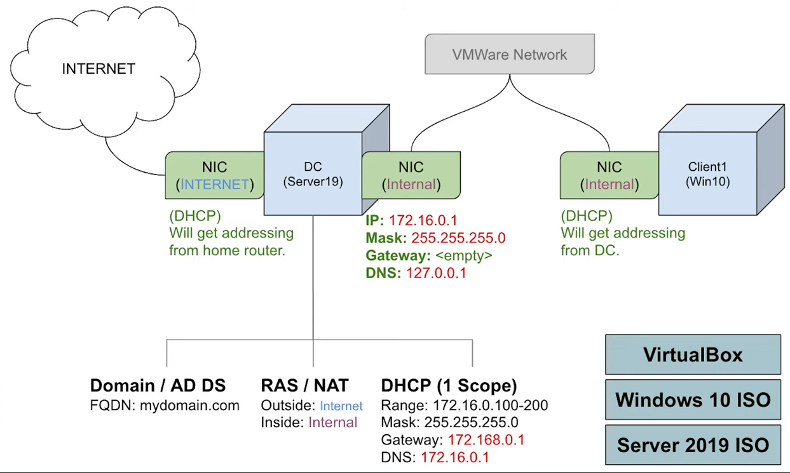
Configuración Inicial: Interfaces de Red
El primer paso que debemos hacer es darle dos interfaces de red a nuestro servidor que actúa como Domain Controller.
Para ello debemos ir a "Red" en VirtualBox y añadimos un adaptador NAT:
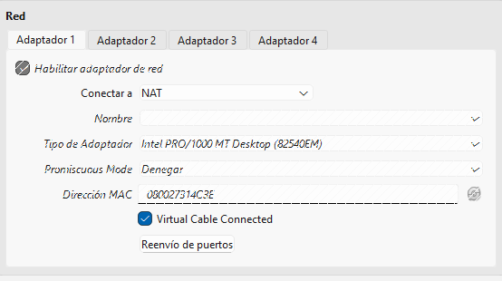
Y una red interna:
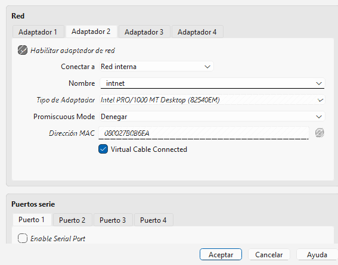
Esto nos servirá para generar un entorno aislado para los clientes de nuestra red, mientras podemos mantener el acceso a internet.
Una vez accedemos al sistema, es importante renombrar las interfaces de red que tenemos. Para ello vamos a "Win + R" y ejecutamos "ncpa.cpl"
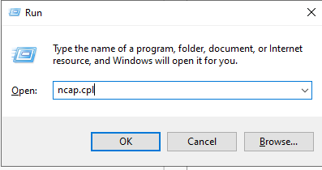
Una vez identifiquemos cuál es la red interna, debemos asignarle una IP clase B privada y DNS, debido a que un Domain Controller nunca debe tener una rotación dinámica de la IP.
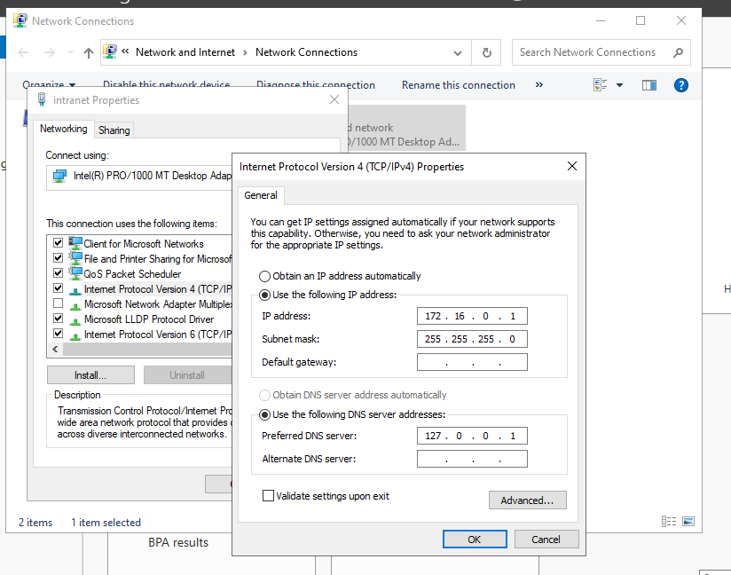
Para este ejercicio seguiremos la imagen del esquema de la infraestructura, donde la IP es 172.16.0.1 y el DNS es 127.0.0.1
Una vez hecho esto, ya podemos proceder a la instalación del Active Directory.
Para ello, en el Server Manager Wizard, le damos al apartado "Add Roles and Features"
Paso 1: Configuración del Dominio
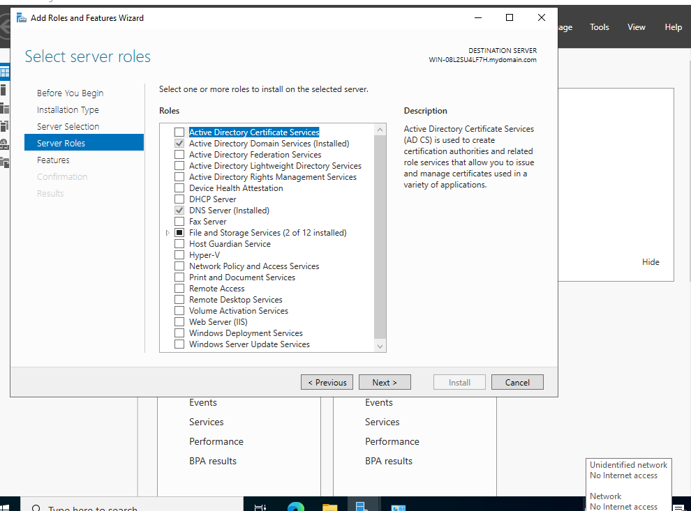
Una vez seleccionemos el "Active Directory Domain Service" y demos "Next", terminará la instalación donde posteriormente deberemos ir al "Domain Controller Options"
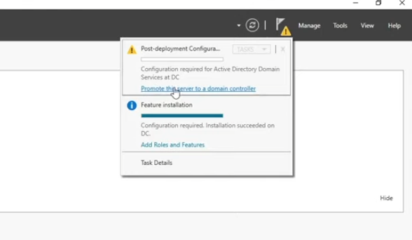
Y verán como les pide introducir un dominio y contraseña.
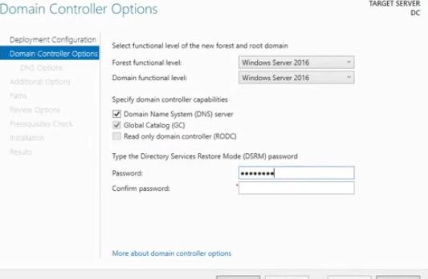
Cuando hayan hecho toda la configuración, el sistema se reiniciará y en el siguiente login entrareis como admins:
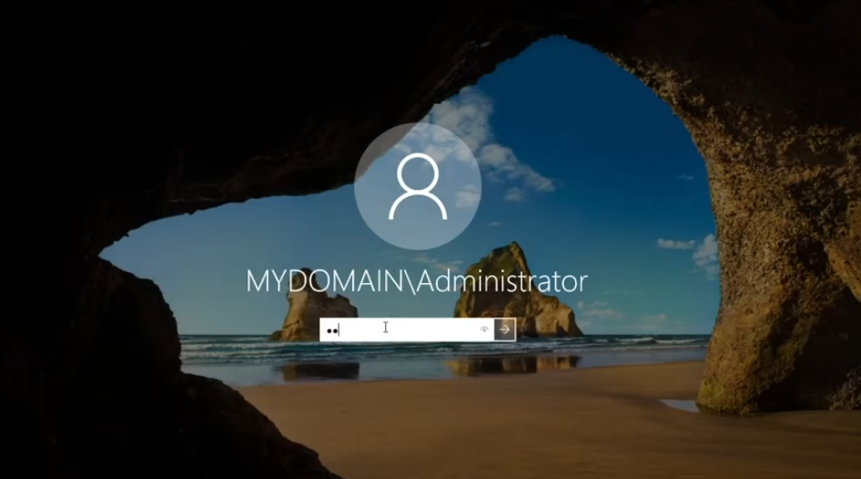
Una vez dentro, procederemos a la configuración de los grupos en el "Active Directory Users and Computers"
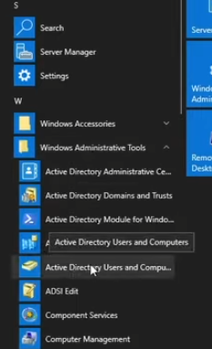
Y crearemos dos grupos distintos: el de los admins y users. Para ello seguiremos este workflow:
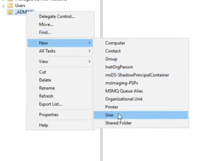
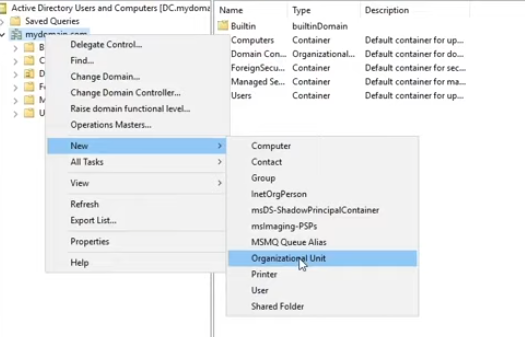
Una vez tengamos la carpeta creada, procederemos a crear un nuevo usuario otorgándole privilegios de administrador del DC.
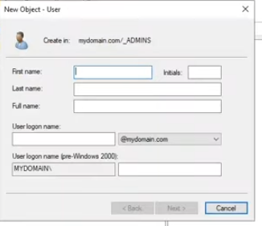
Y cuando tengan vuestro usuario creado, le dan click derecho → properties → Member Of → Domain Admins
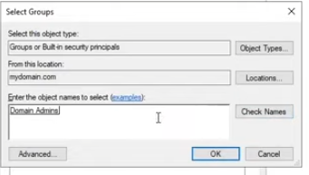
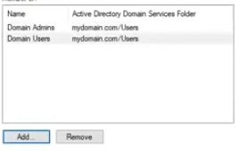
¡Ya tendrán el Active Directory creado con el usuario administrador! Ahora pueden proceder a dar a "Sign Out" y cuando vuelvan a iniciar sesión podrán poner las credenciales de este superusuario.
Paso 2: Configuración de NAT/RAS
En este paso configuraremos el enrutado para que los demás dispositivos puedan acceder a través de internet a través del DC.
Para ello añadimos un nuevo "Add Roles and Features" y en este caso seleccionamos "Remote Access".
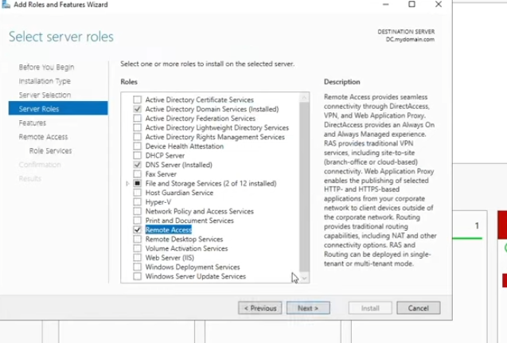
Una vez hayamos instalado todo, nos dirigimos arriba a la derecha donde pone "Tools" para seleccionar "Routing and Remote Access" de esta manera poder configurarlo.
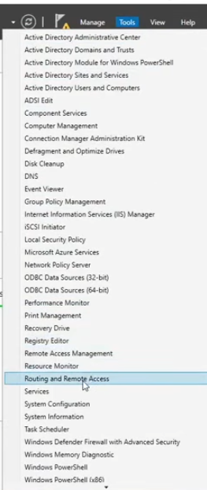
Se nos abrirá este wizard, donde nos permitirá configurar el NAT:
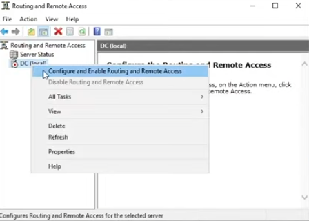
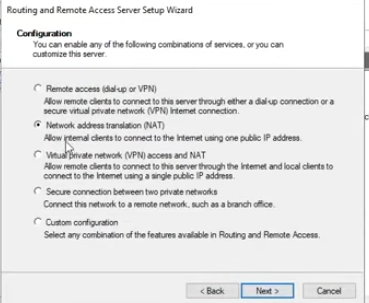
Y al darle "Next" veremos como nos indica seleccionar la interfaz de red pública para configurar nuestro NAT. Una vez le hayamos seleccionado la interfaz correcta, se cambiará el estado del server a verde:
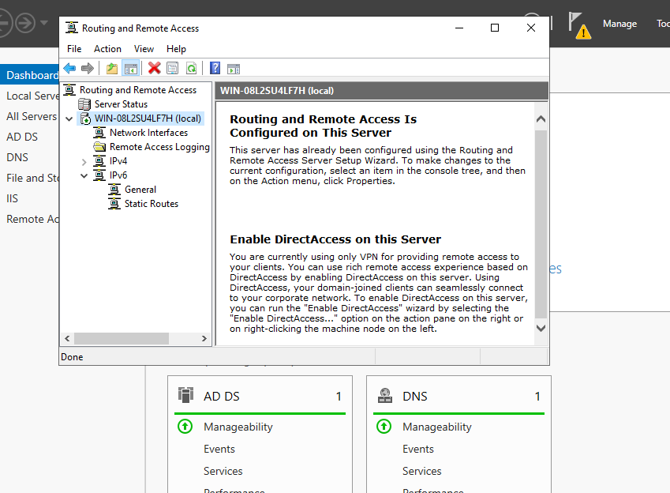
Paso 3: Configuración de DHCP
El siguiente paso es configurar el scope para el DHCP. Básicamente el scope es el rango de direcciones IP que vamos a repartir a los dispositivos que se conecten a nuestra red.
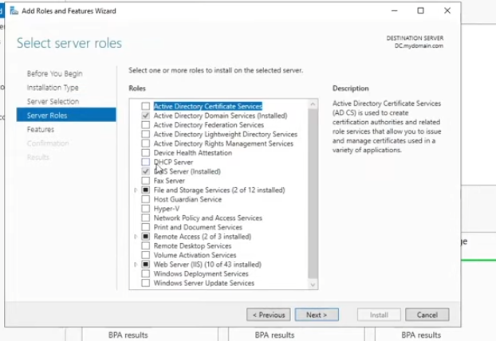
Conceptos Básicos de Direcciones IP
Antes de proseguir, tenemos que entender algunas nociones rápidas sobre las direcciones IP:
La máscara de subred (Subnet Mask) es lo que le dice al dispositivo qué parte de la dirección IP es la red y qué parte es el host.
En 255.255.0.0:
- Los 255 bloquean la parte de la red, dejando solo: 172.16.x.x
- Los 0 son los espacios libres donde el servidor DHCP asigna números del 1 al 254.
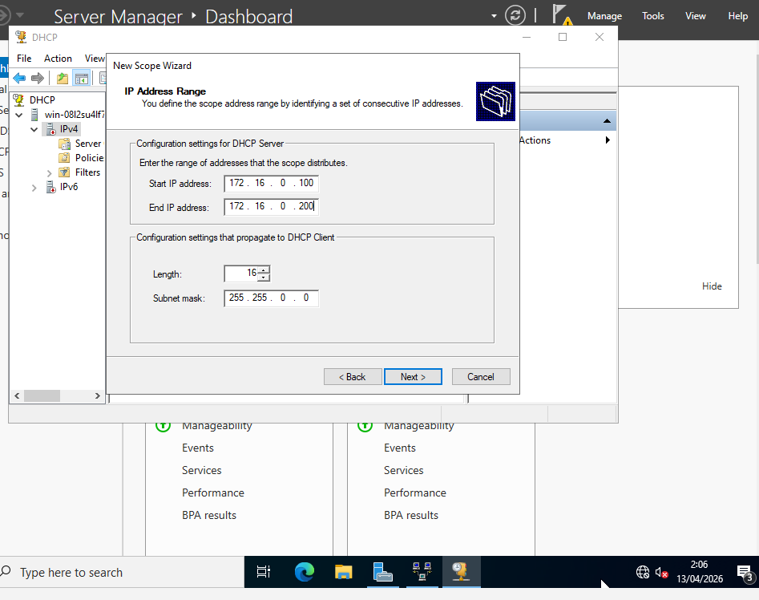
Luego añadimos el gateway, que en este caso será la IP del DC:
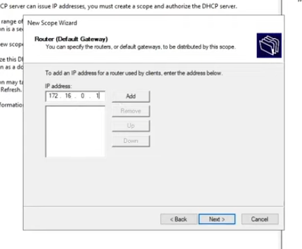
Posteriormente le daremos a "Autorizar" y luego a "Refresh":
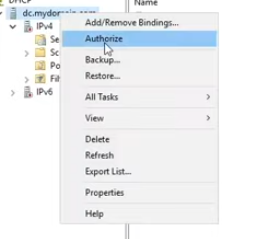
¡Tutorial completado!
Ahora tienes un Active Directory completamente funcional. Para más tutoriales, visita el canal de MarkH4ck.